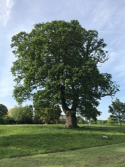

Oak Tree
Botanical Name: Quercus spp.
Family:Fagaceae
Native Region: Northern Hemisphere – Asia, Europe, North America
Significance: Symbol of strength and endurance; keystone forest species.
Uses: Wood, acorns for wildlife, bark in traditional medicine.
BREIF ☰